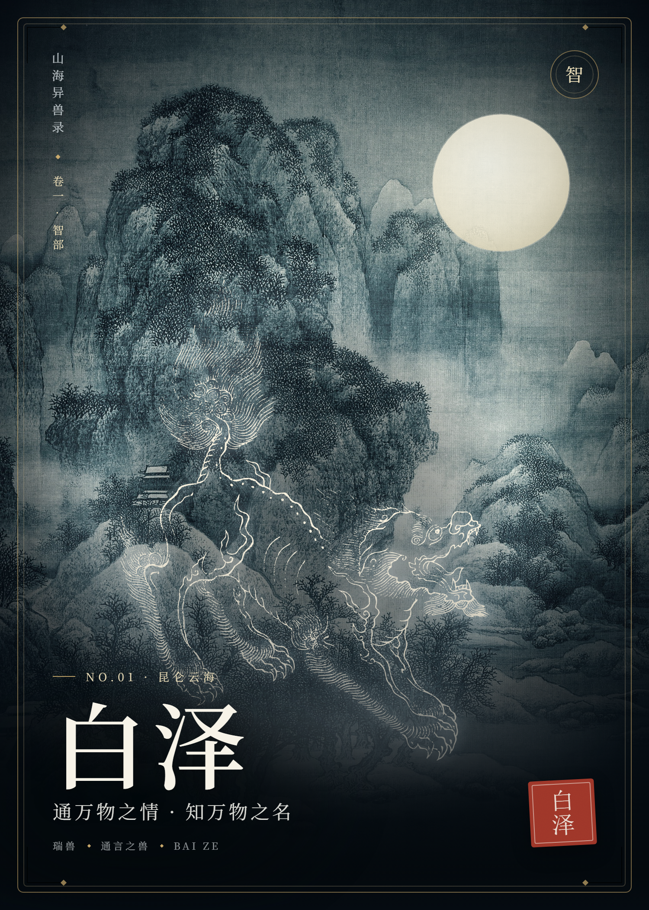
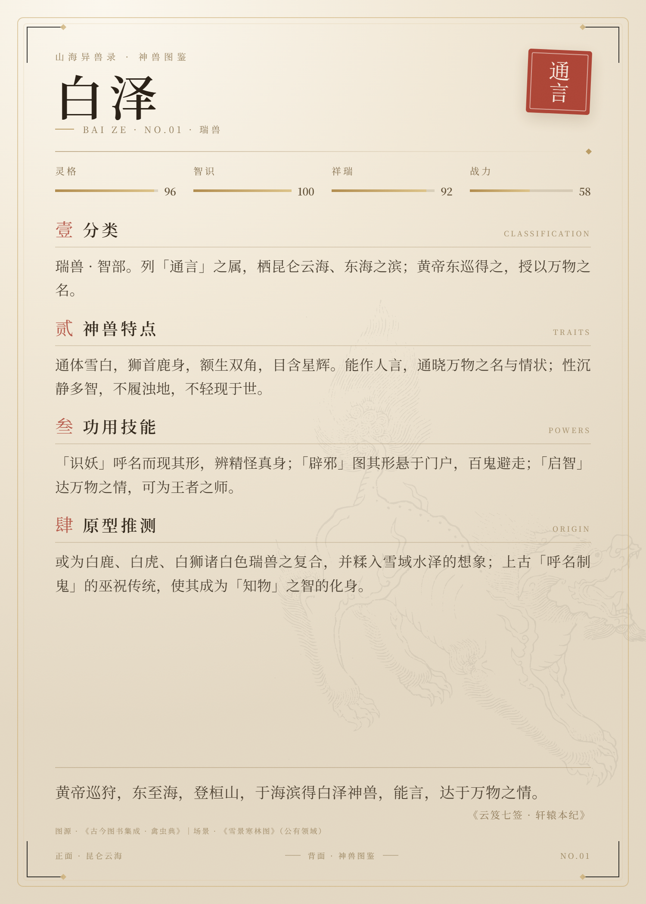

CaptainDW · 山海异兽录
白泽 · 麒麟
两张神兽卡牌，正反双面皆有内容：正面为神兽姿态与所居山水，背面为分类、特点、功用技能与原型推测。图像取自公有领域古籍版画与宋人山水，重组成一套可收藏的「神兽图鉴」。
NO.01 白泽 · 昆仑云海
NO.02 麒麟 · 青绿山川
卡面 750 × 1050 pt
渲染 1500 × 2100 px / 面
双面合成 3520 × 2520 px
双面一览FOUR FACES
front / back



白泽BAI ZE · NO.01
瑞兽 · 通言之兽
分类 / 特点
瑞兽 · 智部，列「通言」之属，栖昆仑云海、东海之滨。通体雪白，狮首鹿身，额生双角，目含星辉；能作人言，通晓万物之名与情状，性沉静多智，不履浊地，不轻现于世。
功用技能 / 原型推测
「识妖」呼名而现其形，辨精怪真身；「辟邪」图其形悬于门户，百鬼避走；「启智」达万物之情，可为王者之师。原型或为白鹿、白虎、白狮诸白色瑞兽之复合，并糅入雪域水泽的想象与上古「呼名制鬼」的巫祝传统。
黄帝巡狩，东至海，登桓山，于海滨得白泽神兽，能言，达于万物之情。《云笈七签 · 轩辕本纪》
麒麟QILIN · NO.02
仁兽 · 四灵之一
分类 / 特点
瑞兽 · 仁部，列「四灵」之一，与凤、龟、龙并称；盛世则现，王者有德则至。麋身牛尾，马蹄一角，角端有肉；身被龙鳞，足不履虫，不折生草，不饮污池。行步中规，声合中吕，性至仁而不伤物。
功用技能 / 原型推测
「兆瑞」天下太平则现身；「送子」麟趾呈祥，祈子嗣贤昌；「章服」明清补服取为章纹，表爵禄与勇德；「镇宅」置形于门，纳福辟邪。原型当为鹿、牛、马与龙图腾之复合，明代以长颈鹿附会「麒麟」乃后起误认，非其原型。
麒，仁兽也。麋身，牛尾，一角。《说文解字》